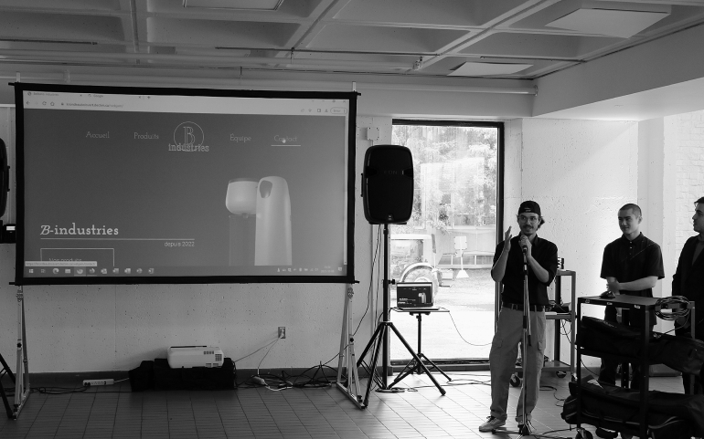

Le design reposait completement sur mes épaules. Il fallait agir vite pour permettre a mon équipe de commencer a coder. Le tout a été réaliser en 4h intensif. Je suis plutôt fier du résultat.

B-Industries est le fruit d'un événement web appelé le WebJam. Un marathon de 48 heures intensif de web avec un objectif claire : créer un objet culinaire, lui designer un site web complet, et livrer le site fonctionnel.
Ce travail est impossible à réaliser seul. C'est pourquoi je tiens à remercier les trois coéquipiers qui ont contribué à ce projet. La tâche est ardue, mais réalisable. Une fin de semaine de stress et plaisir.
Le design reposait completement sur mes épaules. Il fallait agir vite pour permettre a mon équipe de commencer a coder. Le tout a été réaliser en 4h intensif. Je suis plutôt fier du résultat.
Ensuite c'était le temps de programmer le site web. Il fallait
programmer html , css,
javascript et php en peu de temps.
malgrer tout cela nous avons rendu un
site fonctionnel.
Mais il ne faut tout de même pas oublier de rire un peu aussi.
Après 48h de travail acharné c'était le temps de présenter notre produit. La présentation m'a permis de voir c'était quoi présenter un projet web. J'ai appris que bien présenter un projet est aussi important que le projet lui même.
